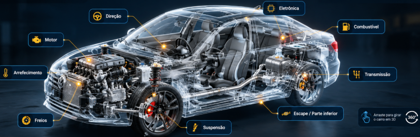

Sua família segura. Seu carro nas mãos certas.
Revisão, diagnóstico e manutenção com transparência total. Aqui seu veículo recebe o mesmo cuidado que damos à nossa família.
CHECK-UP INTERATIVO • RÁPIDO E GRATUITO
Seu carro está dando algum sinal?
Explore os sintomas, aprenda uma dica e converse com a SF Motors.
Imagem técnica interativa • mova, incline e aproxime

Orientação inicial pelos sinais percebidos. O diagnóstico depende de avaliação presencial.
Nossos Vídeos
Identificando Componentes Essenciais
Neste vídeo, mostramos onde ficam os principais pontos de cuidado do seu carro (água do radiador, óleo do motor e água do para-brisa) e por que isso evita pane na estrada. Assista e veja como uma revisão feita no momento certo protege você e sua família.
Manutenção da Correia Dentada
A correia dentada, quando estoura, pode causar um prejuízo enorme no motor. Neste vídeo explicamos em que momento fazer a troca preventiva e por que esse cuidado é muito mais barato do que consertar depois. Ideal para quem quer evitar sustos e gastos desnecessários.
Verificação do Óleo do Motor
No vídeo mostramos, passo a passo, como conferir o nível de óleo em casa e quando você deve procurar a SF Motors para uma avaliação profissional. Um simples cuidado com o óleo pode evitar que o motor “funda” e garantir muitos quilômetros a mais com segurança.
Vídeo WhatsApp — 2026-03-17 11:56
Vídeo recebido via WhatsApp — disponível para visualização e interação.
Vídeo WhatsApp — grok-video
Vídeo recebido via WhatsApp — disponível para visualização e interação.
Vídeo WhatsApp — 2026-03-17 15:42
Vídeo recebido via WhatsApp — disponível para visualização e interação.
Vídeo WhatsApp — 2026-04-10 23:11
Vídeo recebido via WhatsApp — disponível para visualização e interação.
Vídeo WhatsApp — 2026-03-19 13:19
Vídeo recebido via WhatsApp — disponível para visualização e interação.
Vídeo WhatsApp — 2026-04-09 17:09
Vídeo recebido via WhatsApp — disponível para visualização e interação.
Vídeo WhatsApp — 2026-04-26 09:42
Vídeo recebido via WhatsApp — disponível para visualização e interação.
Vídeo WhatsApp — 2026-04-07 22:07
Vídeo recebido via WhatsApp — disponível para visualização e interação.
Vídeo WhatsApp — 2026-04-11 09:18
Vídeo recebido via WhatsApp — disponível para visualização e interação.
Vídeo WhatsApp — 2026-03-07 14:28
Vídeo recebido via WhatsApp — disponível para visualização e interação.
Vídeo WhatsApp — 2026-04-26 09:40
Vídeo recebido via WhatsApp — disponível para visualização e interação.
Vídeo WhatsApp — 2026-04-22 11:53
Vídeo recebido via WhatsApp — disponível para visualização e interação.
Vídeo WhatsApp — 2026-03-26 20:30
Vídeo recebido via WhatsApp — disponível para visualização e interação.
Imagens
Sobre a SF Motors
A SF Motors nasceu do propósito de oferecer um atendimento automotivo baseado em confiança, transparência e excelência técnica. Desde o início, nossa visão foi clara: entregar segurança para cada família que depende do seu veículo no dia a dia, combinando diagnóstico preciso, serviços responsáveis e um cuidado humano que vai além da mecânica.
Ao longo do tempo, construímos nossos pilares de atuação, que orientam todas as nossas decisões:
- Compromisso com a verdade: diagnóstico honesto, explicações claras e respeito ao cliente.
- Excelência técnica: uso de conhecimentos atualizados, boas práticas de manutenção e foco constante na qualidade.
- Atendimento humano: escuta ativa, acolhimento e solução real para cada necessidade.
- Responsabilidade e segurança: cada serviço é feito como se fosse para o nosso próprio carro.
Nossa visão é ser referência em confiança e alto padrão automotivo na região, oferecendo um ambiente seguro, acolhedor e tecnicamente preparado para cuidar do seu veículo. Aqui, o que nos move é ver cada cliente sair com tranquilidade, certeza do bom trabalho e a convicção de que encontrou um lugar onde pode confiar.
Nosso maior orgulho é ver nossos clientes dirigindo com tranquilidade e confiança, sabendo que seu veículo recebeu o melhor tratamento possível. Na SF Motors, não prestamos apenas serviços mecânicos - construímos relacionamentos duradouros baseados em confiança e excelência.
"Sua segurança e satisfação são nossa prioridade número um. Quando você escolhe a SF Motors, escolhe uma parceria para toda a vida do seu veículo."
Por que escolher a SF Motors?
Conheça por que a SF Motors é a escolha certa: técnica, transparência e atendimento humano.
Transparência Real
Diagnóstico claro, explicação passo a passo e total honestidade em cada serviço.
Excelência Técnica
Mais de 20 anos de experiência garantindo precisão e segurança na manutenção automotiva.
Atendimento Humano
Cuidado, respeito e acolhimento em cada atendimento. Seu carro é tratado como se fosse nosso.
Onde Estamos
Estamos no coração de São Francisco do Sul, em uma área de fácil acesso no Centro. Nossa oficina oferece um espaço organizado, seguro e preparado para atender você com excelência.
Rua Marcílio Dias, 786 — Centro, São Francisco do Sul/SC • CEP 89240-000
Peças Originais de Qualidade
Na SF Motors, sua segurança é nossa prioridade. Por isso, trabalhamos exclusivamente com peças originais das melhores marcas do mercado. Cada componente é cuidadosamente selecionado para garantir durabilidade, desempenho e a máxima confiabilidade para seu veículo.

Correias de Alta Performance
Correias de alta performance para garantir o funcionamento perfeito do seu motor.
Terminais de Direção Nakata
Peças originais Nakata para maior precisão e segurança na direção.
Pastilhas de Freio Cobreq
Pastilhas originais Cobreq para frenagem segura e eficiente.
"Trabalhamos apenas com as melhores marcas do mercado, garantindo a originalidade e qualidade das peças para sua total segurança e satisfação."
Nossos Serviços
⛽ Troca de Óleo Profissional + Check-up Completo
Proteja o motor do seu veículo com uma troca de óleo feita com lubrificantes premium e filtros originais. O serviço inclui um check-up de 15 itens essenciais, garantindo segurança, desempenho e maior vida útil ao seu carro.
⚡ Elétrica Automotiva
Diagnóstico elétrico completo com precisão avançada. Utilizamos equipamentos modernos para identificar rapidamente qualquer falha — bateria, alternador, partida, luzes, injeção e sistemas eletrônicos. Serviço rápido, seguro e com total transparência.
🛠️ Mecânica em Geral
Manutenção completa com diagnóstico preciso para todas as marcas e modelos.
Realizamos revisões, reparos e serviços avançados com peças de alta qualidade e processos técnicos certificados.
Dirija com mais segurança, desempenho e tranquilidade — seu carro em mãos de especialistas.
⚙️ Injeção Eletrônica
Diagnóstico avançado e reparo completo da injeção eletrônica. Identificamos falhas com precisão usando equipamentos profissionais, corrigindo problemas que afetam desempenho, consumo, marcha lenta e potência. Resultado: motor mais estável, econômico e eficiente.
🛑 Freios
Inspeção e troca de pastilhas, discos e manutenção do sistema de freios para garantir segurança e eficiência na frenagem.
🚙 Suspensão
Verificação de amortecedores, molas e componentes da suspensão para dirigir com conforto e segurança; substituições e alinhamento.
Envie sua Dúvida
⚠️ Resposta poderá ser dada em até 48 horas


.png)

.jpg)